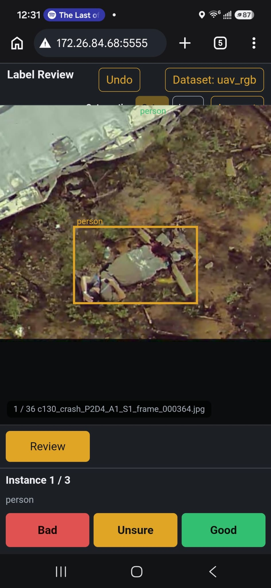
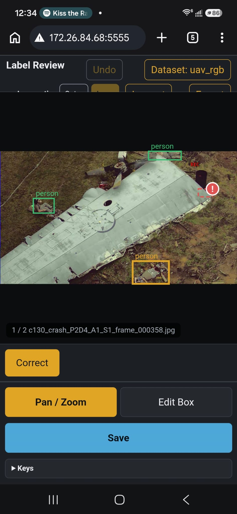
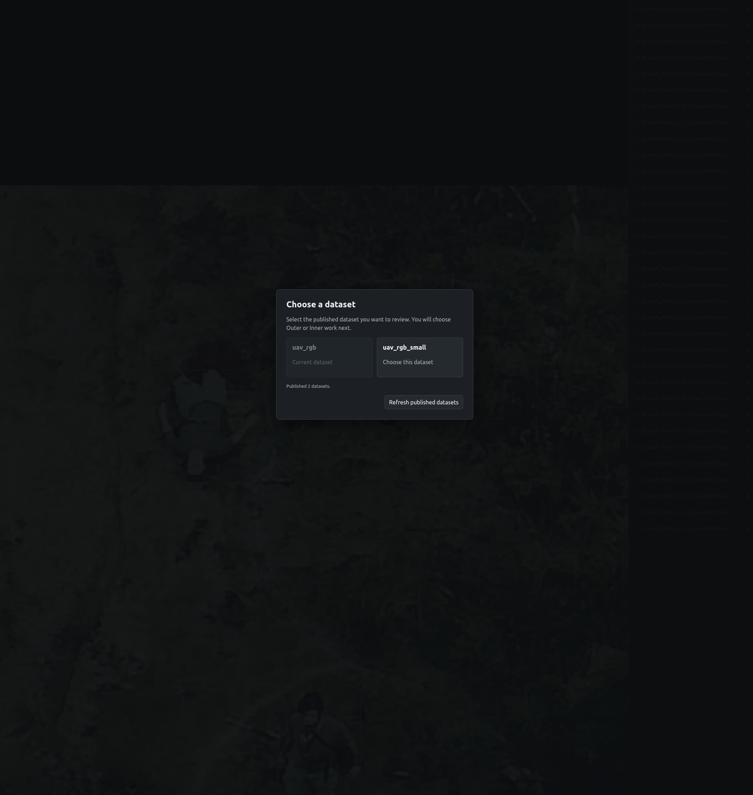

Overview
The DARPA Triage Challenge requires autonomous robots to rapidly locate and classify casualties across complex, unstructured environments. Detection quality is a fundamental bottleneck: a model trained on noisy or incorrectly labelled data produces unreliable results in the field regardless of the downstream localization or autonomy stack. As part of Team Chiron at AirLab, Carnegie Mellon University, I built the two systems that address this bottleneck — the model training and evaluation pipelines, and the label review platform that improves the quality of training data before it reaches those pipelines.
The work has two complementary pillars. The first is a pair of reproducible, config-driven training pipelines for YOLO and RF-DETR casualty-detection models, paired with an evaluation harness that produces comparable operating-point metrics across model variants. The second is a self-hosted, multi-user web application for reviewing and correcting the SAM3-generated bounding-box labels that feed into training — turning raw auto-annotations into verified, exportable YOLO-format labels the pipelines can trust.
Model Training & Evaluation
Both pipelines are designed so that reproducing a training run requires only a config file and a dataset pointer — no manual edits to Python scripts. Evaluation runs the same scoring logic against every run in a batch, producing directly comparable metrics.
- YOLO training pipeline — Config-driven (TOML) pipeline for YOLO26 casualty detection. Supports an 80-class COCO head (person at class 0) or a true single-class person head. Handles both standard YOLO bounding-box labels and 9-token quad-polygon labels, converting polygons to axis-aligned boxes transparently. Integrates live Weights & Biases logging. A deterministic dataset preparation step writes a clean cached dataset and YAML before any training begins, keeping source data untouched.
- RF-DETR training pipeline — Multi-profile pipeline supporting both COCO and YOLO dataset layouts, with auto-detection of format. Profiles range from a public-data-only baseline to a fine-tuned run that adds private Gate 2/3 field data with stratified 80/20 splitting. A dataset builder records the exact sources, seed, and sampling fractions used, so any run can be reproduced or audited. The active Dump-All fine-tuning run uses the RF-DETR XL architecture on the full historical field dataset. W&B and TensorBoard logging are both supported; periodic held-out evaluation on a separate test set runs at fixed epoch checkpoints during training.
- Fine-tuning result — Fine-tuning RF-DETR on historical field data improved detection performance over the baseline by F1 +0.0919 and AP50 +0.1432.
-
Evaluation harness — Batch scorer that discovers training run
folders, loads the best checkpoint for each, and runs a confidence threshold
sweep with greedy NMS and IoU-based GT matching. Produces best-F1 operating
point, AP50, AP50–95, latency percentiles, and peak GPU memory for every run,
written to per-run
summary.jsonand an aggregate Excel workbook. Optionally generates visualized prediction overlays at the best-F1 threshold. Supports adding a pretrained COCO baseline as a reference run without any fine-tuned weights. -
Checkpoint export — Training runs produce a
checkpoint_best_total.pthartifact. A handoff script bundles the checkpoint, run metadata, and label map into a self-contained artifact directory ready for integration into the deployment pipeline.
Label Review Platform
SAM3-generated labels automate the bulk of annotation work but introduce errors that degrade model quality if left uncorrected. The label review platform is a self-hosted web application that routes those labels through a structured human-review workflow before export, without overwriting the original label files.
- Architecture — Single-instance Python/Gunicorn web server, deployed via Docker Compose with Caddy as a TLS-terminating reverse proxy for internet-facing use. Review state is file-backed and protected by an in-process lock, so review sessions survive server restarts and resume exactly where they left off. Multi-dataset support: each direct child of the configured datasets directory is a standard YOLO dataset root; an admin publishes available datasets without restarting the service.
- Review workflow — Reviewers work through images one at a time. The app starts with a full-frame preview, then guides the reviewer through a zoomed lawn-mower scan with a minimap, then zooms into each existing box for a per-instance Good / Bad / Unsure verdict. Each frame ends with a full-frame missing- and false-label check.
- Outer / Inner triage roles — Outer reviewers complete the first-pass sweep, drawing from an automatically managed pocket of images. Inner reviewers handle the expert work: resolving Unsure items, correcting boxes marked Bad, verifying those corrections in a second pass, and monitoring overall dataset progress through a dashboard. An Inner admin can generate single-use Outer invitation links for onboarding additional first-pass reviewers.
-
Export — Once all items are accepted, a single export
action writes reviewed labels and review metadata under a timestamped
review_outputs/subdirectory in YOLO format, leaving the original labels untouched. Export is blocked until all queues are empty. - Deployment — Deployed for team use with role-based accounts, HTTPS-only authenticated sessions, and hourly backups to AirLab network storage. Passwords are stored as salted hashes; sessions expire after 12 hours; disabling an account immediately invalidates its active sessions.
Project Images

First-pass (Outer) review — per-instance Bad / Unsure / Good triage on an aerial crash-site frame from the DARPA Triage Challenge dataset

Correction view — bad-box indicator (red !) with Correct / Pan-Zoom / Edit Box / Save controls for Inner-circle label fixing

Multi-dataset chooser — published YOLO datasets selectable without restarting the service

RF-DETR evaluation — Recall-Confidence and Precision-Recall curves on the casualty detection test set

YOLO detection output — casualty bounding boxes across a sample of training frames
My Contribution
- Designed and built the reproducible YOLO training pipeline with config-driven dataset preparation, COCO/polygon label handling, and W&B integration
- Designed and built the reproducible RF-DETR training pipeline with multi-profile dataset construction, stratified private-data mixing, and periodic held-out evaluation
- Built the batch evaluation harness: confidence sweep, AP50/AP50–95, best-F1 operating point, latency profiling, and aggregate Excel reporting
- Fine-tuned RF-DETR on historical field data, achieving F1 +0.0919 and AP50 +0.1432 over the baseline
- Designed and implemented the label review web application end-to-end: review workflow engine, Outer/Inner role model, multi-dataset support, and YOLO-format export
- Deployed the label review platform for team use with Docker Compose, Caddy TLS, role-based accounts, and automated hourly backups
Tech Stack
- Python
- YOLO (Ultralytics YOLO26) · RF-DETR (XL / 2XL)
- Weights & Biases · TensorBoard
- Flask · Gunicorn
- Docker Compose · Caddy
- YOLO dataset format (bounding-box & polygon labels)
- TOML configuration
Status
Active research engineering work. Both pipelines and the label review platform are in ongoing use for DARPA Triage Challenge model development at AirLab, Carnegie Mellon University (Apr 2026 – Present). Label review sessions are deployed and actively used by Team Chiron for improving the quality of SAM3-generated training annotations.